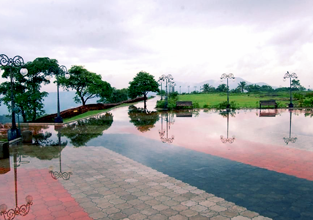

-

CHERUPPADI MALA
A small hangout place for families and friends.Beautiful hill top area. But most of the hill area is destroyed by quarries.Within a few year, the hill will not be seen there.Authorities must do something to protect this area if they have any plan to develop the tourism.Plastic depositing is another issue faced here.Any how within the limits, this area is beautiful as it is.
-

ARIMBRA HILLS
Arimbra Hills or Mini Ooty is a tourist spot between Malappuram and Kondotty in Malappuram district, Kerala, India. It is at a height of 445 meter above sea level. The place attracts large number of visitors for its rolling hills and scenic views. The location got the nickname as it resembles Ooty, one of the famous hill stations in India. There are many stone crushers and plantations atop the hill. There is an old Harijan Colony on the western side of the hill.
-

KOTTAKKUNNU
Kottakkunnu, Known as Marine Drive of Malappuram is a hill garden. Kottakkunnu park contains an Open Air theater, Lalitha Kala Academy Art gallery, a water theme park, Adventure Park, Kids traffic park, Balloon Park, 16D Cinema. There is a Water fountain and Laser show every weekend and on festivals like Eid, Onam, New year eve, etc. At Kottakkunnu one can see traces of the first fort built by the Zamorins. This tourism destination turned historic hill attracts lakhs of people per annum. This scenic table-top location is at the crest of the Cantonment Hill near the District Collectorate in the heart of Malappuram city and 51 km from Kozhikode, 12 km from Kottakkal, 25 km from Calicut International Airport, 17 km from Angadipuram railway station and 29 km from Tirur railway station. Visitors are allowed up to 9pm.
v